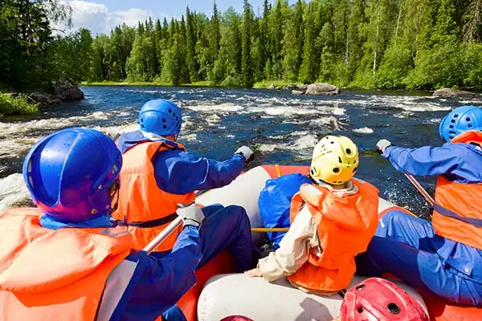
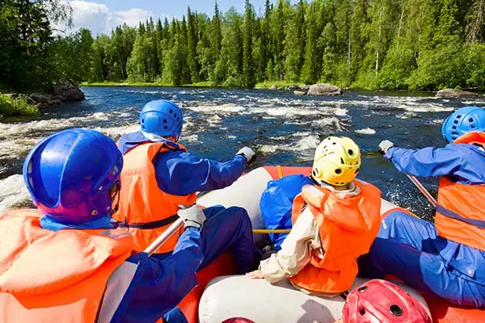

History
Rapids River Rafting was founded in 1999 by outdoors and river rafting enthusiast Jorge Gutiérez. A first-generation American and Tennesseean, Gutiérez was raised in the Tennessee wilderness, and grew up camping, hiking, hunting, fishing, and kayaking on the Ocoee River.
After spending several years working as a ranger for Tennessee National Park services, Gutiérez decided to pursue his dream: make s living helping others find a love for outdoor exploration the same as he had. To do this, Gutiérez decided to start a company offering rafting and kayaking tours of the river he grew up loving so much, the Ocoee.

Located in rural Benton, Tennessee, Rapids River Rafting (affectionately nicknamed Triple R), has been realizing Gutiérez's dream since it's foundation. Offering not only tours of the river, but also group events, camps, educational days, and opportunities to learn about conservation, Triple R has become so much more than just a rafting company.
Retired, Gutiérez now serves as director of the Tennesee Office of Outdoor Recreation; however, his dream lives on stronger than ever in the hands of his successor, Tanner Dodds, who has served as our CEO for the past five years. So come and be a part of the dream and book your river tour today!


 
